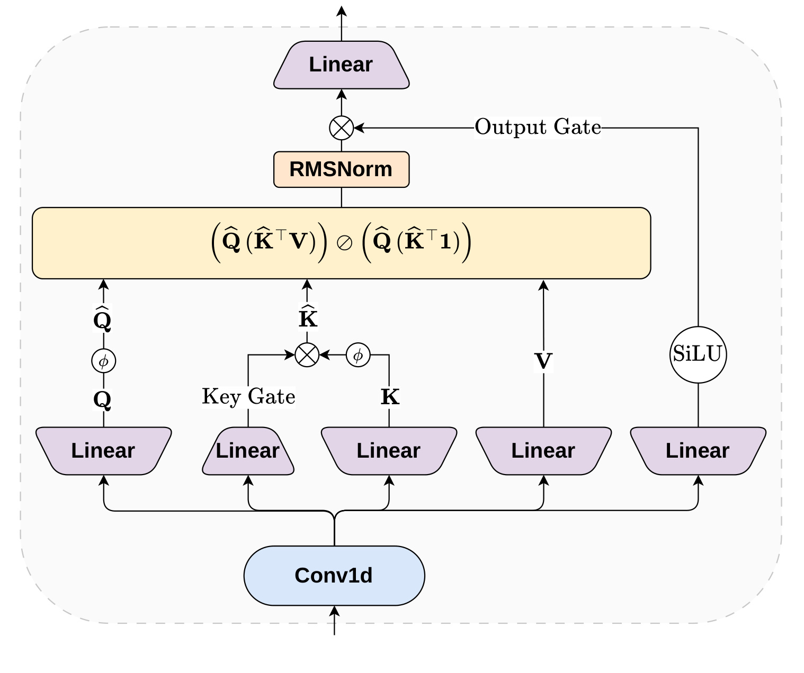
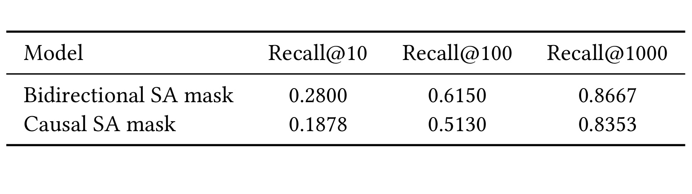
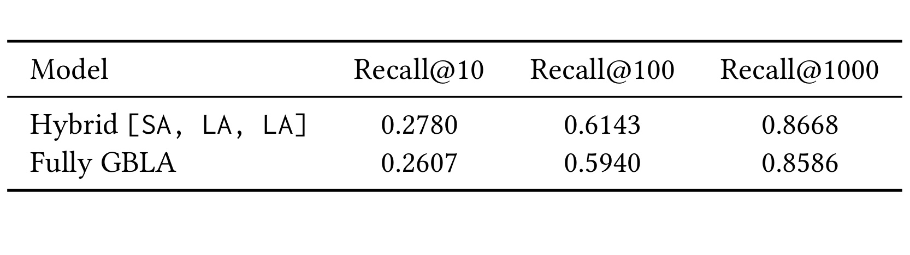
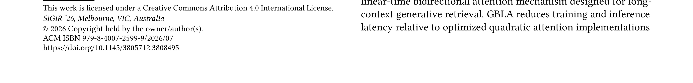
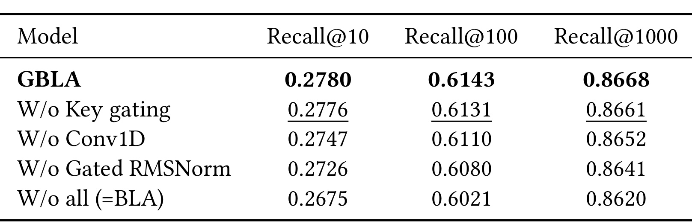
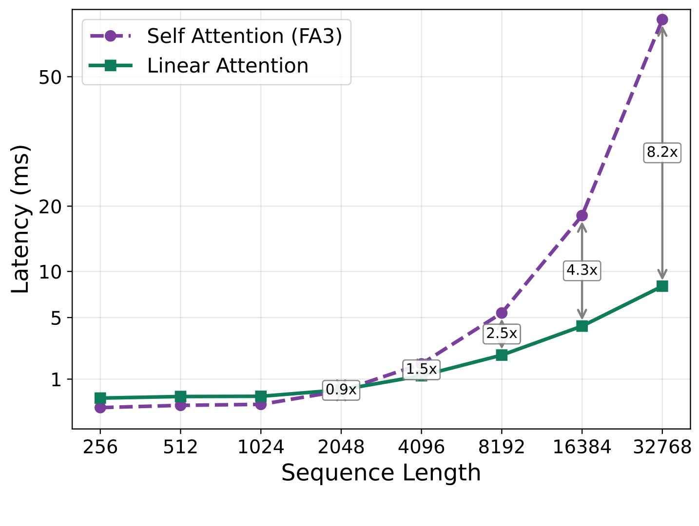
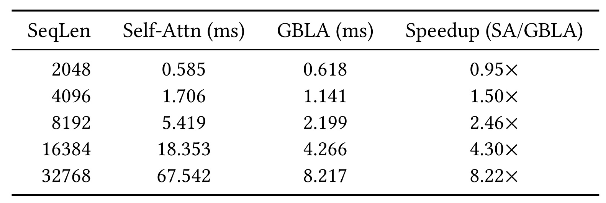
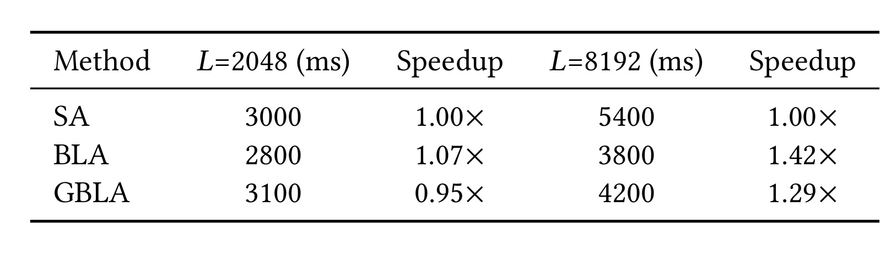
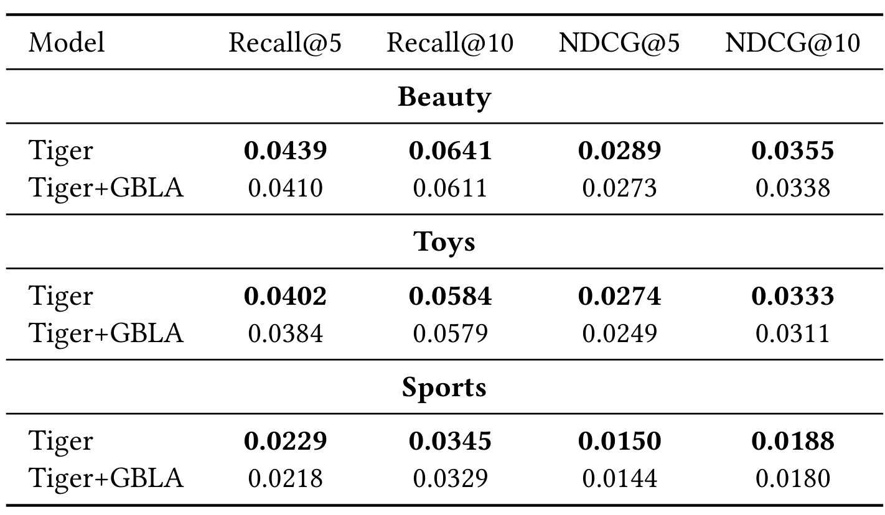

Gated Bidirectional Linear Attention for Generative Retrieval
- 主类别：推荐算法
- 论文入口：arXiv:2606.07317
- 方法简称：GBLA
- 一作主机构：Yandex
- 代码/项目页：论文正文写有
matfu-pixel/GRID，但本 worker 未离开单篇目录联网核验独立仓库，因此按“PDF 提示存在代码入口，链接未复核”处理。
1. 背景和问题
这篇论文讨论的是生成式推荐检索里的长历史 encoder 成本。作者把场景设定在流媒体推荐：用户会连续消费音乐、视频或其他内容，活跃用户的交互历史会随时间变得很长；生成式检索模型通常把历史交给 encoder，再由 autoregressive decoder 生成候选 item 的语义 ID。这个架构的好处是可以把召回和生成统一在一个模型里，但代价也很明确：当 encoder 使用标准 self-attention 时，序列长度增长会带来二次复杂度，长历史越有价值，在线延迟越难接受。
论文的关键观察不是“线性注意力更快”这么简单。推荐检索的 encoder 与大语言模型 decoder 的需求不同：LLM 的主流长上下文工作大多处理 causal attention，因为生成时当前位置只能看过去；而生成式检索 encoder 处理的是已经发生的用户历史，模型可以使用 bidirectional mask，在每个历史位置上同时参考前后交互。作者在 Yandex Music 的生产数据上发现，encoder 使用双向注意力对召回质量很重要。如果直接使用 causal mask，Recall@1000 会明显下降。这就形成了一个具体矛盾：推荐质量希望保留 bidirectional encoder，服务效率又要求从二次复杂度里出来。
现有工业方案通常从三个方向缓解这个问题。第一类是压缩输入序列，只保留最近历史、抽样历史或用层次化路径压缩长行为；它能降低开销，但风险是丢掉对未来点击有帮助的长期兴趣。第二类是系统优化，例如 FlashAttention、context parallelism 或分层历史通路；它们提升硬件利用率，但并不改变 attention 对长度的二次依赖。第三类是换成线性注意力或状态空间模型；它们在线性复杂度上更有吸引力，但多数成熟设计默认 causal，因此不能直接满足双向 encoder 的质量需求。
GBLA 的贡献就落在这个缝隙里：保留 encoder 的双向建模，同时把 attention 改写成线性时间。论文不是提出一个完整的新推荐系统，而是提出一个可替换 encoder attention layer 的模块。它以 kernelized bidirectional linear attention 为主体，再加上三个轻量组件：Conv1D 的 local causal mixing、sequence-level key gating 和 gated RMSNorm。作者随后用混合堆叠保留一部分 self-attention，采用 [SA, LA, LA] 的顺序，而不是把所有层都替换成 GBLA。这个选择很重要，因为论文的实验显示，完全 GBLA 在质量上不如 hybrid。
从工程角度读这篇论文，应当把它看作一个“长历史候选生成 encoder 的替换件”而不是一套端到端方案。它要回答四个问题：第一，线性双向注意力是否能近似 self-attention 的检索质量；第二，局部时序模式、历史事件重要性和输出门控这些补丁是否真的有效；第三，混合 self-attention 与 GBLA 后，主链路的 Recall@1000 是否仍然可接受；第四，在 H100 上，速度收益是否只存在于单层 micro-benchmark，还是能在长序列训练中体现出来。
本轮笔记重读的是论文 PDF 本身。标题、作者、机构、SIGIR 2026 记录、Yandex Music 数据设置、表格数值、图表 caption 与方法公式均来自 PDF。实验数值没有基于作者数据或代码独立复算，因此这里的“质量持平”“速度提升”等表述都限定为论文报告结果；如果要进入内部复现实验，还需要重新跑数据、确认负采样、候选生成、semantic ID tokenizer 和训练预算。
还有一个需要提前说清的边界：这篇论文篇幅只有五页，方法和实验都写得非常压缩，很多实现细节被放在几行公式或几句设置说明里。例如作者只说明 GBLA 在 encoder 中替换部分 attention layer、Conv1D kernel size 为 4、BLA 用 fused Triton kernel、GBLA 用 torch.compile，但没有展开 serving 图、缓存策略、padding 方案或 kernel 级实现。因此这份笔记会把 PDF 中已经出现的公式、图表和表格逐项解释清楚，同时避免把未公开的工程实现补成确定事实。对内部读者来说，更合理的用法是把 GBLA 当成长历史 encoder 的候选实验方案，先在离线环境复刻关键表格，再决定是否进入线上灰度。
2. 方法
2.1 生成式检索设定与 encoder 瓶颈
论文使用的是 encoder-decoder 生成式检索设定，接近 OneRec 这类工作。给定用户 \(u\) 的交互序列
符号解释：\(x_u\) 表示用户 \(u\) 的历史交互序列，\(i^u_k\) 是第 \(k\) 次交互的 item，\(L\) 是输入给 encoder 的历史长度。论文后续所有长度实验里的 512、2048、4096、8192、32768 都是在讨论这个 \(L\) 的变化。
模型需要根据过去交互生成用户接下来可能消费的一组 item。流媒体服务通常按 batch 向用户返回推荐；用户消费完一批内容后，系统再返回下一批。因此作者把同一批中的交互当作 target items，把之前的交互序列作为条件输入。这个设定会把 encoder 放到核心位置，因为 encoder 需要把很长的历史压成 decoder cross-attention 可用的上下文。
item 表示采用 multi-hash 技术：一个 item ID 通过多个 hash 函数映射到共享 embedding table 的多个 entry，再把这些 embedding 拼接并通过线性层投影。这个设计服务于大规模 item 空间，避免每个 item 都独占完整参数。经过 embedding 后的用户历史序列送入 bidirectional transformer encoder，decoder 再基于 encoder 输出以 autoregressive 方式生成候选 item 的 semantic IDs。论文后续所有注意力替换都发生在 encoder 上，decoder 仍然是单层 causal decoder，并带 self-attention 与 cross-attention。
作者强调 encoder 占主要计算量，因此优化 encoder attention 比优化 decoder 更直接。Yandex Music 的工业设置使用 9 层 bidirectional encoder，hidden size 为 1024，16 个 attention heads；decoder 只有 1 层。这个结构说明该系统更像“重编码、轻生成”的候选生成器，长历史的成本主要积累在 encoder 的多层双向 attention 上。GBLA 不是改变推荐目标，也不是改变 semantic ID 的生成方式，而是替换 encoder 中部分 attention operator。
这个边界对复现很关键。如果内部模型的 decoder 很深，或者候选生成瓶颈不在用户历史 encoder，而在 item tokenization、beam search、ANN 检索、下游 ranker 或特征服务，那么 GBLA 的收益会被稀释。反过来，如果线上用户历史已经达到几千甚至上万条，且 encoder self-attention 在 profiling 中占显著比例，那么论文要解决的问题就与真实系统高度一致。
2.2 从双向 softmax attention 到双向线性 attention
论文先写出标准 bidirectional softmax attention。设嵌入后的用户历史序列为 \(X\in \mathbb{R}^{L\times d}\)，单个 head 的 query、key、value 为
符号解释：\(X\) 是已经嵌入后的历史矩阵，\(d\) 是模型 hidden size，\(d_h\) 是单个 attention head 的维度；\(W_Q,W_K,W_V\) 是把输入投影成 query、key、value 的可学习矩阵。
对单个 query \(q_i\)，标准双向 attention 是
符号解释：\(q_i\) 是第 \(i\) 个历史位置的 query，\(k_j,v_j\) 是第 \(j\) 个位置的 key 和 value；分子聚合所有 value，分母做归一化。因为求和范围是 \(1\) 到 \(L\)，这里表达的是双向 encoder，而不是只能看过去的 causal attention。
这里没有 causal mask，因此每个位置都可以聚合全序列信息。它适合推荐 encoder，因为历史中某个 item 的表示可以从前后消费上下文里共同理解。例如用户先听某个歌手的新专辑，再回听旧歌，两个方向的信息都可能帮助判断兴趣是否稳定。问题在于 softmax attention 需要显式或隐式处理 \(L\times L\) 的交互，长度从 2048 增到 8192 或 32768 时，成本增长非常快。
线性注意力的基本思路是把指数相似度替换成非负 kernel feature 的内积：
这样双向 linear attention 可以写成
矩阵形式为
符号解释：\(\phi\) 是非负特征映射，\(\mathbf{1}\) 是长度为 \(L\) 的全 1 向量，\(\oslash\) 表示按元素除法并广播。关键变换是先计算 \(\phi(K)^\top V\) 和 \(\phi(K)^\top\mathbf{1}\)，再与所有 query 相乘，因此不显式生成 \(L\times L\) attention 矩阵。
这个公式的工程含义是，模型不再为每个 query 与每个 key 建一张完整注意力矩阵，而是先把所有 key-value 聚合到 \(\phi(K)^\top V\)，再让每个 query 去读这个全局聚合结果。复杂度从论文写的 \(O(L^2 d_h)\) 降到 \(O(Ld_h^2)\)。当 head dimension 固定而历史长度很大时，长度维度的二次项被消掉。
但是 plain BLA 不等于 GBLA。简单的 kernelized bidirectional attention 会损失 softmax attention 里一些局部模式和选择能力：短程相邻 item 的顺序信号会变弱，所有历史事件进入全局聚合时缺少按序列重要性软遗忘的机制，attention 输出也缺少与原输入相关的门控调节。论文后续三个组件正是为了解决这些质量损失，而不是为了改变复杂度阶数。
2.3 GBLA 的三个轻量增强
GBLA 的完整结构见 Figure 1。它把 Conv1D、key gate、linear-attention accumulator、RMSNorm 和 output gate 放在同一个 attention layer 中，目标是在保持线性复杂度的同时让层内信号更接近推荐 encoder 需要的行为。

Figure 1 是本文最重要的方法图。底部的 Conv1D 表示输入序列先做局部混合，然后再分成 query、key、value 以及 output gate 分支。左侧 query 分支经过 \(\phi\) 得到 \(\hat Q\)；key 分支一方面经过 \(\phi\)，另一方面接收一个 Key Gate，二者相乘得到 \(\hat K\)。中间的黄色块对应论文公式里的 \((\hat Q(\hat K^\top V))\oslash(\hat Q(\hat K^\top \mathbf{1}))\)。上方 RMSNorm 与 Output Gate 说明 attention 输出不是直接送到下游，而是经过归一化和 SiLU 门控后再线性投影。图里没有 caption 混入，裁剪范围只保留架构对象。
第一项增强是 local causal mixing。论文写为
符号解释：\(\tilde X\) 是经过一维卷积后的输入表示。论文把卷积放在 QKV projection 前面，意味着 query、key、value 都共享同一份局部混合后的历史上下文，而不是只在某个分支上补局部信息。
这一步的作用是补回局部短程模式。推荐历史不是普通的无序集合，连续消费之间常有短期主题，例如用户正在听某张专辑、某个播客系列或某类训练音乐。标准 bidirectional linear attention 把全序列压入全局统计，可能弱化这些局部相邻关系；Conv1D 在 QKV projection 前做局部混合，让每个位置先带上邻域信息。论文实验中 Conv1D kernel size 设为 4，表示作者希望捕捉很短的局部行为片段，而不是用卷积替代长程建模。
这里有一个细节：论文称 Conv1D 为 local causal mixing。即使 encoder 的 attention 是 bidirectional，局部混合仍然可以保持一种方向性的短程归纳偏置，避免把未来局部信息以不合适的方式提前泄漏到某些局部表示里。对生成式推荐而言，训练目标是给定过去 interaction 生成下一批 target items，encoder 输入本身已经是历史，但局部顺序仍然有时间语义。使用 causal 局部卷积可以让短程行为更像顺序滤波，再由 bidirectional linear attention 做全局聚合。
第二项增强是 sequence-level key gating。论文写道，每个 token 学一个 key scalar gate：
带 gate 的单 query 形式为
矩阵形式为
符号解释：\(g_j\) 是第 \(j\) 个历史事件的 gate，\(\hat K\) 是被 gate 缩放后的 key feature，\(\odot\) 是逐元素乘法。由于 \(g\) 经过序列维度 softmax，所有历史事件会竞争同一份权重预算，这正是论文所说的软遗忘。
这个 gate 是“sequence-level”的，因为 \(g\) 在序列维度上做 softmax。它不是给每个 query 单独生成一套 attention 分布，而是先对历史事件整体做重要性重加权，再进入 key 聚合。作者称它为 soft forgetting mechanism：历史越长，过旧或不相关事件越可能污染全局统计；key gating 给模型一个轻量方式，在不恢复二次 attention 矩阵的情况下，把某些历史事件对全局 key-value 汇总的贡献压低。
这与普通 softmax attention 的选择性不同。softmax attention 可以让每个 query 动态选择 key，但成本高；GBLA 的 key gate 只提供一组全序列权重，表达力弱一些，却保持线性结构。对推荐系统来说，这个折中可能合理，因为很多历史事件的重要性与当前用户状态和局部上下文有关，不一定需要每个位置都重新计算完整交互。Table 4 的消融也显示，去掉 key gating 后 Recall@1000 从 0.8668 降到 0.8661，幅度不大但方向一致。
第三项增强是 gated RMSNorm。论文定义 attention 输出 \(O=\operatorname{Attn}_{GBLA}(Q,K,V)\in\mathbb{R}^{L\times d_h}\)，然后使用
符号解释：\(O\) 是 GBLA attention 输出，\(W_R\) 是生成 output gate 的可学习矩阵，\(\operatorname{SiLU}\) 负责提供平滑门控。这个门控让每个位置根据局部混合后的输入调节线性 attention 输出，而不是把全局聚合结果原样传给下一层。
其中 \(W_R\in\mathbb{R}^{d\times d_h}\)。这相当于用输入侧的 \(\tilde X\) 生成一个 output gate，再调制 RMSNorm 之后的 attention 输出。Figure 1 右侧的 Output Gate 与 SiLU 分支对应这个公式。直观上，线性 attention 的输出是全局聚合结果，可能缺少 token 级别的非线性调节；gated RMSNorm 让每个位置可以根据局部混合后的输入决定通过多少全局信息。
论文还说明多头情况下，每个 head 都使用独立的 \(W_Q^h,W_K^h,W_V^h,w_g^h,W_R^h\)。这意味着 key gate 和 output gate 不是所有 head 共用一套标量，而是每个 head 可以学习不同的历史选择模式。推荐系统的 head 可能分别关注流派、歌手、长期偏好、短期会话、冷启动 item 或播放行为强度；虽然论文没有解释 head 语义，但独立参数至少保留了多头分工的可能性。
2.4 混合 encoder：为什么不是全部替换成 GBLA
论文没有把 encoder 的全部 self-attention 都替换成 GBLA，而是使用 1:2 的 hybrid pattern，即 [SA, LA, LA] 排列。这里 SA 表示 self-attention，LA 在最佳模型中对应 GBLA。这个选择来自一个实用判断：在真实推荐模型里，线性 attention 单独使用往往不是最优，完全删除 softmax self-attention 会损失质量；保留一部分 self-attention 可以让模型维持高表达力，同时用更多 GBLA 层降低长序列成本。
这种混合堆叠也解释了为什么论文结果要同时看质量和效率。若只看 per-layer speedup，GBLA 在长序列上很有优势；但 full model 里仍然保留了 self-attention，整体加速会小于单层线性注意力相对 FlashAttention-v3 的速度比。论文的 Table 6 正是在回答这个问题：端到端训练 step time 中，GBLA hybrid 在 \(L=8192\) 仍然能比 SA 快，但在 \(L=2048\) 时略慢，因为短序列下 self-attention 本身不是主要瓶颈，而 GBLA 的额外组件会带来一点开销。
方法设计还有一个容易被忽略的点：作者在实验中对 BLA 使用 fused Triton kernel，而 GBLA 通过 torch.compile 优化。这说明 plain BLA 与 GBLA 的硬件实现成熟度不同。GBLA 增加 key gating、Conv1D 和 gated RMSNorm 后，理论复杂度仍然线性，但实际速度取决于 kernel 融合和内存访问。论文没有把 GBLA 描述成在所有长度上都更快，而是明确指出从 \(L=4096\) 起 per-layer 才超过 FlashAttention-v3。
如果把这套方法迁移到内部系统，最稳妥的步骤不是直接替换所有 attention，而是复刻论文的 hybrid 思路。先保留若干 SA 层作为表达力锚点，再把剩余 encoder 层按 [SA, GBLA, GBLA] 或相近比例替换。然后分别检查 Recall@1000、短历史用户、长历史用户、活跃用户、冷启动用户和高频类目。只有当长历史分桶的延迟收益与质量损失都可接受，才有必要继续推进更激进的全 GBLA 或更大比例 GBLA。
还要注意训练超参并非完全共享。论文写明 full self-attention 的 peak learning rate 使用 \(7\times10^{-4}\)，hybrid encoder 使用 \(5\times10^{-4}\)，两者都先 warmup 3000 iterations，再线性衰减到 \(0.1x\)。这说明作者没有把同一套学习率机械套到所有架构上，而是为不同 attention operator 调过训练稳定性。复现时如果只换层、不调学习率，很可能把训练不稳误判成 GBLA 质量差。更严格的对照应当同时报告最优学习率、有效 batch size、历史截断、semantic ID tokenizer 和 checkpoint selection 口径。
3. 实验结果
3.1 Yandex Music 主结果：双向性与 hybrid stack
工业实验使用 Yandex Music 的生产数据。训练数据来自连续 7 天的交互，按时间顺序消费；评估使用随后一天。训练集包含 400M training samples 的 subsample。模型使用 9 层 bidirectional encoder，hidden size 为 1024，16 个 heads；decoder 是单层 causal layer。评估指标是 Recall@{10,100,1000}，论文特别强调 Recall@1000，因为生产 pipeline 会把 top-1000 candidates 交给下游 ranker。

Table 1 直接回答“encoder 能不能用 causal mask”这个问题。在 history length 2048 下，Bidirectional SA mask 的 Recall@10、Recall@100、Recall@1000 分别是 0.2800、0.6150、0.8667；Causal SA mask 分别是 0.1878、0.5130、0.8353。差距最大的是 Recall@10，说明双向信息不仅影响候选全集覆盖，也影响最靠前候选。作者据此说明 generative retrieval encoder 与 LLM decoder 不同，不能简单套用因果长上下文注意力。
这组数字也给内部复现提供了第一道 sanity check：如果把 encoder 从 causal 改成 bidirectional 后没有明显收益，说明自己的数据切分、target batch 构造、semantic ID 训练或 decoder cross-attention 可能与论文场景差异很大。此时不应急着评估 GBLA，而要先确认 bidirectional encoder 在本地任务上确实有价值。

Table 2 说明“线性化”也不能做得过满。在同样 length 2048 下，Hybrid [SA, LA, LA] 的 Recall@1000 为 0.8668，与 Table 1 的 bidirectional SA 0.8667 基本持平；Fully GBLA 的 Recall@1000 为 0.8586，Recall@10 也从 0.2780 降到 0.2607。这个结果支撑论文后续采用 hybrid encoder：GBLA 负责把大部分层的长序列成本压下来，保留的 SA 层提供更强的交互表达。工程上这意味着 GBLA 更适合作为部分替换，而不是一次性把 encoder 全部改成线性注意力。
这张表还提示，评估 GBLA 时不能只看“是否替换成功”，还要看替换比例。Fully GBLA 的 Recall@1000 比 hybrid 低 0.0082，在作者语境里已经接近一个不可忽略的差距；如果线上 ranker 对 top-1000 候选覆盖高度敏感，候选生成层的这类下降会继续传导到排序和播放指标。
3.2 历史长度扩展：质量是否随长历史保持稳定

Table 3 是质量扩展性的核心证据。作者比较 Bidirectional SA 与 Hybrid GBLA 在 512、2048、4096、8192 四种长度下的 Recall@10、Recall@100 和 Recall@1000。512 时 Hybrid GBLA 的 Recall@1000 为 0.8198，略高于 SA 的 0.8182；2048 时 GBLA 为 0.8668，SA 为 0.8667；4096 时 GBLA 为 0.8790，SA 为 0.8784；8192 时 GBLA 为 0.8842，SA 为 0.8854。也就是说，在前三个长度上 GBLA 甚至略高，8192 时出现很小下降。
这张表的意义不在于证明 GBLA 一定优于 self-attention，而在于证明 hybrid GBLA 没有随着历史长度增加发生明显质量崩塌。长历史推荐系统最担心的是，线性 attention 把所有历史压成全局统计后，长尾兴趣和短期会话同时被稀释。Table 3 至少在论文设置下显示，GBLA 在 8192 之前可以保持与 bidirectional SA 非常接近的 Recall@1000。注意这里仍是论文报告结果，未复算显著性；在内部复现时应继续看不同用户活跃度和不同音乐类目分桶。
3.3 组件消融：Conv1D、key gating 与 gated RMSNorm

Table 4 把 GBLA 的三个补丁拆开看。完整 GBLA 在 length 2048 下是 Recall@10 0.2780、Recall@100 0.6143、Recall@1000 0.8668。去掉 Key gating 后，三个指标为 0.2776、0.6131、0.8661；去掉 Conv1D 后为 0.2747、0.6110、0.8652；去掉 Gated RMSNorm 后为 0.2726、0.6080、0.8641；去掉全部增强退化成 BLA 后为 0.2675、0.6021、0.8620。
这个消融说明每个增强项的收益都不算巨大，但方向一致。Key gating 的影响最小，说明单独软遗忘只能微调历史事件权重；Conv1D 和 gated RMSNorm 的影响更明显，尤其 Recall@10 更敏感。plain BLA 的降幅最大，证明“线性双向 attention”本身不足以解释最终质量，GBLA 的局部混合、序列门控和输出门控确实承担了补偿表达力的作用。
从复现角度看，这张表也提醒我们不要只实现公式里的 \(\hat Q(\hat K^\top V)\) 部分。如果为了工程简化去掉 Conv1D 或 gated RMSNorm，很可能得到一个比论文结果更弱的 BLA 变体；如果又拿这个弱变体去评估“GBLA 是否有效”，结论会偏悲观。真正可比的实现需要同时包含 Conv1D kernel size 4、sequence-level key gate、多头独立 gate 参数和 gated RMSNorm 输出。
3.4 H100 延迟与训练效率

Figure 2 展示的是 encoder latency 随 sequence length 变化的曲线。横轴从 256 到 32768，纵轴是毫秒级 latency；紫色虚线是 Self Attention (FA3)，绿色实线是 Linear Attention。图里标出的 speedup 从 2048 附近的 0.9x 开始，到 4096 的 1.5x、8192 的 2.5x、16384 的 4.3x，再到 32768 的 8.2x。曲线形状比单个 headline 数字更重要：短序列时 linear attention 不占优，长序列时 self-attention 的增长速度明显更陡。
从图形走势看，GBLA 的价值来自长度分布的尾部，而不是平均请求。若一个系统把所有用户历史都截断到 2048，Figure 2 反而提醒我们不要为了线性复杂度引入额外实现；若系统希望把高活跃用户历史扩展到 8192 以上，绿色曲线的缓慢增长才会转化成真实服务预算。

Table 5 给出 H100 batch=8 的 per-layer latency 精确数值。2048 时 Self-Attn 是 0.585 ms，GBLA 是 0.618 ms，速度比为 0.95x，说明短序列下 GBLA 还略慢；4096 时 self-attention 1.706 ms，GBLA 1.141 ms，速度比 1.50x；8192 时 5.419 ms 对 2.199 ms，速度比 2.46x；16384 时 18.353 ms 对 4.266 ms，速度比 4.30x；32768 时 67.542 ms 对 8.217 ms，速度比 8.22x。这个表把 Figure 2 的曲线落成了可读数字。
作者还补充，短历史 \(L\le 2048\) 时 self-attention 在端到端 inference 里占比小于 25%，因此单层小幅变慢对整体延迟影响有限；长历史时 self-attention block 逐渐成为主瓶颈，加速 attention 才有实质意义。这句话对工程判断很关键：GBLA 的目标人群不是所有推荐模型，而是已经被长历史 encoder 限制住的系统。如果线上最大历史长度只有 128 或 512，GBLA 的复杂度优势很难抵消实现复杂度。

Table 6 讨论 full hybrid model 的 training step time。\(L=2048\)、batch=32 时，SA 是 3000 ms，BLA 是 2800 ms，GBLA 是 3100 ms；也就是说 plain BLA 有 1.07x speedup，但 GBLA 是 0.95x，略慢于 SA。\(L=8192\)、batch=8 时，SA 是 5400 ms，BLA 是 3800 ms，GBLA 是 4200 ms；GBLA 相对 SA 是 1.29x speedup，BLA 是 1.42x。这个结果说明 GBLA 的三个增强项有成本，短序列训练不一定更快，但长序列下仍能降低完整 step time。
单层 latency 与 training step time 合起来看，论文的效率结论比较克制：GBLA 不是在任何条件下都压过 FlashAttention-v3，而是在 \(L\ge 4096\) 后出现明显优势，在 32768 的极长历史下优势最大。内部落地时应先用 profiling 找到当前历史长度分布。如果 90% 请求的有效历史都在 2048 以下，GBLA 可以先作为长历史旁路；如果高价值用户或重度活跃用户经常超过 4096，GBLA 才更适合进入主候选实验。
3.5 Amazon 公开数据迁移

Table 7 使用 GRID 框架的 Amazon Beauty、Toys、Sports 公开数据检验迁移性。作者把 Tiger generative model 的 encoder attention operator 替换成 GBLA，保持其余 backbone 和训练设置一致，并在 5 个随机种子上平均。Beauty 上 Tiger 的 Recall@10 是 0.0641，Tiger+GBLA 是 0.0611；Toys 上分别是 0.0584 和 0.0579；Sports 上分别是 0.0345 和 0.0329。NDCG 指标也基本接近，但 Tiger+GBLA 多数略低。
作者对这组结果的解释是，Amazon 公共数据的用户历史最多 128 个 item，self-attention 并不是主要瓶颈，因此不做效率 benchmark。这个设置更像“替换后别严重坏掉”的迁移性检查，而不是证明 GBLA 在短历史公开数据上更优。对内部系统而言，Table 7 的价值是说明 GBLA hybrid 不只在 Yandex Music 私有数据上可运行，也能嵌到 Tiger/GRID 这类公开 generative recommendation 框架里；但它不能支撑短历史场景使用 GBLA 的速度收益。
整体实验链条可以概括为三层证据。第一，Yandex Music 主结果证明 bidirectional encoder 很关键，hybrid GBLA 可以接近 bidirectional SA。第二，组件消融证明 GBLA 不是 plain BLA 的换名，而是 Conv1D、key gating、gated RMSNorm 共同补足质量。第三，H100 结果证明长序列下 per-layer 和 full training step 都有现实收益，且速度优势随长度扩大。公开 Amazon 结果则提供外部框架兼容性，但不是主要效率证据。
4. 总结
GBLA 的主要价值是给长历史生成式检索提供一个可部署的中间方案：它不牺牲 encoder 的 bidirectional 建模假设，也不继续承受标准 self-attention 的二次长度成本。方法上，它用 kernelized bidirectional linear attention 消掉 \(L\times L\) 矩阵，用 Conv1D 保留局部行为模式，用 sequence-level key gating 对历史事件做软遗忘，用 gated RMSNorm 调节输出，再通过 [SA, LA, LA] hybrid stack 保留一部分 softmax attention 表达力。
这篇论文最适合优先关注长历史候选生成链路。若系统已经有大量活跃用户历史超过 4096，且 encoder attention 是 profiling 里的主要延迟项，GBLA 值得做离线复现。若当前历史较短、encoder 层数较少，或瓶颈在 item tokenization、向量检索、ranker、特征服务和召回合并，GBLA 可能只会增加实现复杂度。论文自己的结果也显示，2048 时 GBLA per-layer 略慢，training step 也没有优势。
局限需要明确。第一，论文的工业数据来自 Yandex Music，外部无法复算 400M training samples 的设置和线上候选分布。第二，Table 7 的公开数据历史很短，不能验证长历史效率收益。第三，GBLA 当前实现依赖 torch.compile，实际线上速度还取决于 kernel 融合、batching、序列 padding 和 serving 框架。第四，hybrid stack 的最佳比例可能随模型深度、item 表示、历史截断和下游 ranker 变化，不能机械套用 1:2。
后续复现可以按三步走。先在现有生成式推荐 encoder 上实现 plain BLA、GBLA 和 hybrid GBLA，严格对齐 Conv1D、key gate、gated RMSNorm 与多头参数；再按历史长度分桶评估 Recall@1000、Recall@100、Recall@10，以及长历史用户和短历史用户的相反收益；最后单独做 H100 或线上目标硬件的 profiling，区分 per-layer latency、training step time 和端到端 serving latency。只有质量、长历史收益和真实硬件延迟同时成立，GBLA 才能从论文方法变成工程候选。
我对这篇论文的判断是：它不是一个“短历史推荐也应该马上替换 attention”的结论，而是一个很清楚的长历史扩展策略。它的强项是问题边界明确、表格覆盖了质量、消融、per-layer latency、training step time 和公开数据迁移；弱项是工业数据不可复算、实现细节压缩、公开数据又不足以验证长历史效率。最值得跟进的是在自己的候选生成 encoder 上复刻 Table 2、Table 3 和 Table 5：只要 hybrid 质量能贴近 SA，并且本地长度分桶能进入 4096 以上的速度优势区间，GBLA 就有继续投入的价值；否则它更适合作为技术储备，而不是近期上线方案。